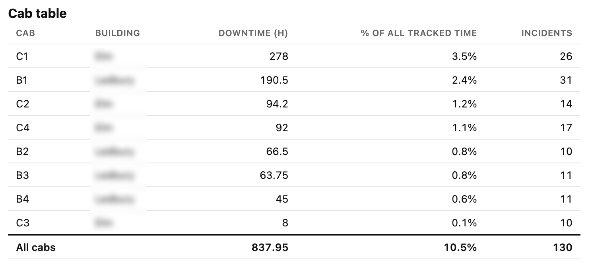

Elevator Issue Tracker
Solutions don’t need to be complicated to be impactful. This tracker brought recurring faults and service history for eight elevators into one clear view, giving management the evidence to support service contract negotiations.
Overview
I created a consolidated tracker for eight elevators to turn recurring faults and service history into a clearer picture of reliability. Instead of reviewing service visits in isolation, management could compare how frequently each cab experienced issues and how long it remained unavailable.
By November 6, 2026, the records covered 334 days and included 130 incidents, with a combined 837.95 cab-hours of downtime. Bringing those records together gave property management leadership supporting evidence for service contract negotiations.
The problem
There was no consolidated tracker for elevator issues before this project. Technicians would attend and make temporary fixes, but the same problems kept recurring. Without a shared history, it was difficult to see how often issues returned or how much downtime they caused.
A completed service visit did not necessarily mean a recurring problem had been resolved. The team needed a way to look across visits and identify patterns over time. It also needed to distinguish between frequent incidents and lengthy outages: the cab with the most incidents was not necessarily the one with the greatest downtime.
My contribution
I consolidated the records for all eight elevators and organized them into cab-level summaries. I presented downtime in a ranked bar chart so the largest concentrations were immediately visible, then paired that view with a table showing downtime hours, percentage of the tracking period, and incident counts.
I used the same 8,016-hour tracking period for each cab’s downtime percentage, making the figures comparable. Keeping the chart and supporting table together allowed management to move from a quick visual comparison to the underlying totals when discussing service performance.
What the records showed
C1 recorded 278 hours of downtime, the highest of the eight cabs, representing approximately 3.5% of its tracked time. B1 followed with 190.5 hours, or approximately 2.4%. These figures showed where unavailability was most concentrated during the tracking period.
B1 had the most incidents at 31, compared with 26 for C1. C1 nevertheless accumulated more downtime. Reading frequency and duration together gave management a more useful basis for reviewing recurring issues than either measure alone.
Screenshots
These views were cleaned from the management summary workbook. The tracker has been maintained since December 7, 2025. As of November 6, 2026, that covers 10 months and 30 days: 334 days, or 8,016 hours.
Each cab’s downtime percentage is its recorded downtime hours divided by the 8,016-hour tracking period, multiplied by 100. The percentages describe downtime over that period, rather than each cab’s share of total downtime.


Outcome
The tracker made recurring issues visible across service visits and documented the downtime that continued after temporary fixes. Property management leadership used the consolidated history in service contract negotiations, with cab-level figures to support the discussion.
Escalating recurring issues requires evidence. Operationally, the tracker gave the onsite team the data to back up requests for a more substantial, permanent solution. Documented incident counts and downtime made it possible to demonstrate the pattern across service visits and explain why temporary fixes were not enough.
The template was later applied at other properties, extending the same approach to tracking elevator issues beyond the original site. Its value was in making service history easier to review and recurring problems easier to demonstrate.